7 Driver-Team Combos You Might Have Forgotten
In the World Rally Championship's 54 seasons, there have been countless driver and team combos, some successful, others were surprisingly bizarre one-offs or short-lived partnerships that history almost forgot. So let's have a look at seven…

The Biggest Gaps in Pace Between Team-Mates in the WRC
In rallying, teams do not always field evenly matched driver lineups. Sometimes its because they wanted to give a chance to a younger driver, other times it's because said driver brought in a lot of money, or he was just a last resort signing. Today…

Every 2026 WRC driver's biggest crash
Every rally driver has had a big crash in their career. In this post, we will be taking a look at the biggest smash of every driver in the top class from the 2026 WRC season. Let's have a look!

Col de Turini; a Monte Carlo Legend
The Col de Turini is a stage that lives in infamy among rally fans. Over the decades, 106 passes of the stage have been held, with 51 different drivers managing to win this legendary stage. But why is Col de Turini so famous? What drivers have…

When the WRC visited Circuits
The WRC will visit the Monaco Circuit for the first time since 2008. To mark this occasion, let's have a look at other times the World Rally Championship visited well known motorsport venues!

Mitsubishi and Abu Dhabi's Forgotten WRC Effort
Long before Rally Saudi Arabia, long before Rally Jordan and the Qatar and Abu Dhabi World Rally Teams, there was an effort for an Abu Dhabi backed team to join the WRC in 2007, using Mitsubishi Lancer Evo WRC cars.

Mini's WRC programme: What Went Wrong?
In 2011, Mini returned to the World Rally Championship after more than four decades away, p artnering with Prodrive . However, despite early promise, financial struggles and limited success quickly curtailed the program, ending it prematurely.

The 7 Least Experienced WRC Lineups in History
M-Sport is fielding a lineup that has just 15 entries in top class machinery in the WRC. But where do they find themselves in the all-time list?
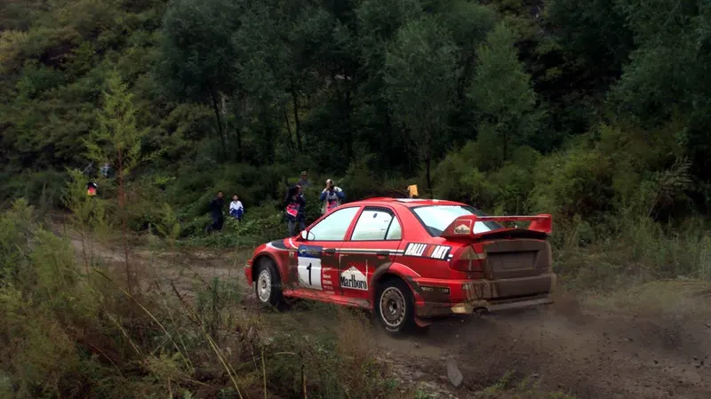
Rally China's bizarre story and what we can learn from it
Rally China has long harboured ambitions to be a staple of the World Rally Championship, yet its track record is anything but perfect. The 1999 rally left many questioning its viability, and the 2016 cancellation only solidified doubts about its…
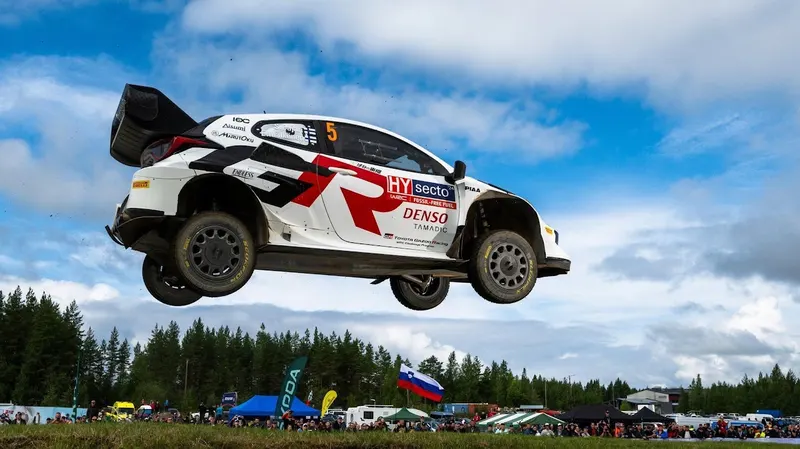
Every Points Scoring Driver's First Stage Win in the 2024 WRC Season
Sami Pajari made headlines in Rally Finland, as the young Finn scored his first career stage win in the top class on his debut! The Toyota protege became the 10th youngest WRC stage winner ever. So that got me thinking, what was every WRC driver's…
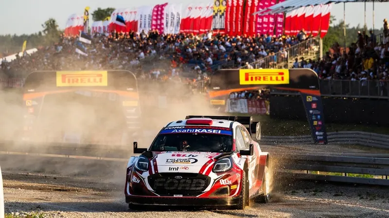
Five of the Worst Power Stages in WRC History
The Rally Poland Power Stage was so bad, that it left us wondering what were some other horrible stage selections for a WRC Power Stage. So here are 5 of the Worst Power Stages in WRC history!
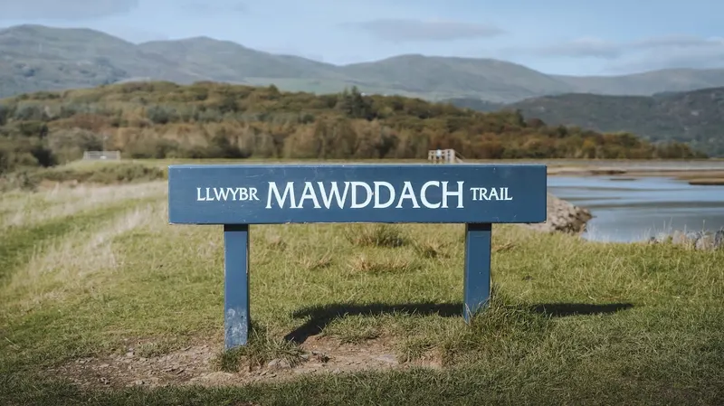
A Retrospective On Weird WRC Stage Names
Col De Turini, Ouninpohja, Fafe... These are all stage names we are well familiar with. But what about stages like Mu, Ogre Hill, and even Here Come Da Judge?
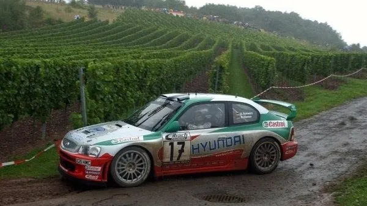
7 times WRC Manufacturers had Seasons to Forget
We tend to remember the champions after every year, but what about the teams or drivers who had absolute stinkers? Here's a list of 7 Manufacturers that had seasons to forget!
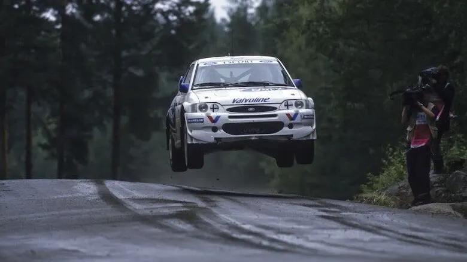
5 great Super Sub performances!
WRC has had its fair share of super subs along the years. Whether it was because of more common things such as an injury, an illness or a temporary solution after a sacking, pretty much every team has had to search for a driver for one or two…
From the archive
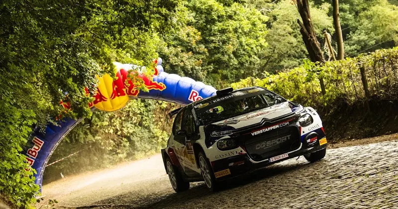
7 Circuit Racing Drivers who went Rallying
What other circuit racers apart from Jos Verstappen competed in rallies, and how did they fare?
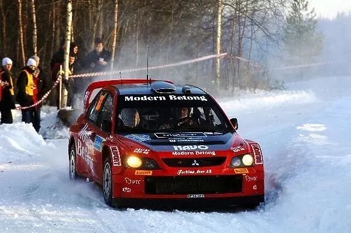
5 Rally Sweden Moments you Forgot!
The next stop in the WRC calendar is Sweden, the only snow rally of the season! Sweden has been part of the calendar in all but 3 seasons, and is a rally with rich history. Understandably,…
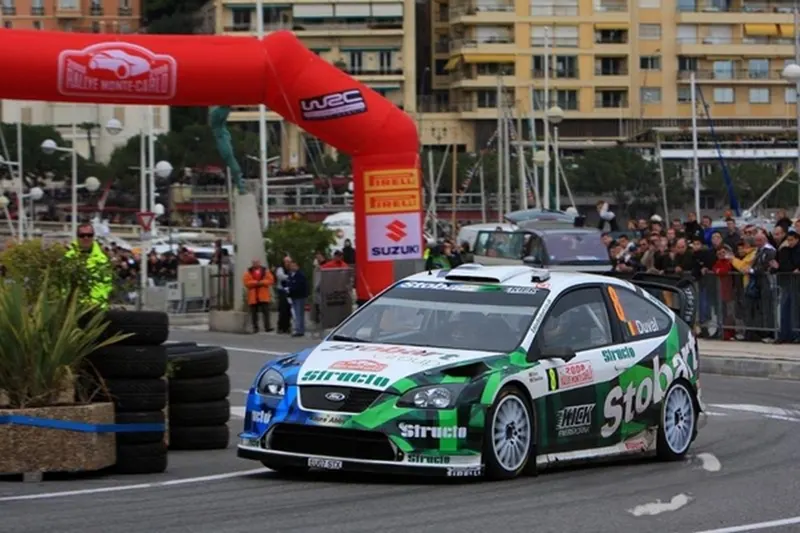
5 Rally Monte Carlo Moments you Forgot!
The start of the 2024 season is upon us! Is everyone as excited as I am? I hope so! Rally Monte Carlo is the traditional start of the WRC season, and it’s given us countless moments to…
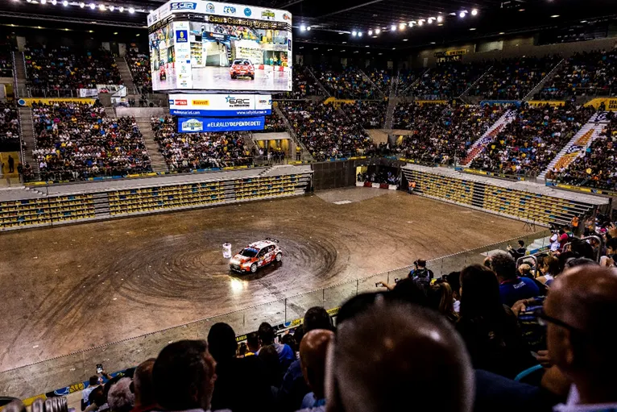
10 of the Worst Super Special Stages to ever be used in the WRC
The Powerslide Blog teams up with Antti from It Gets Faster Now! to list the best and worst super specials of WRC.
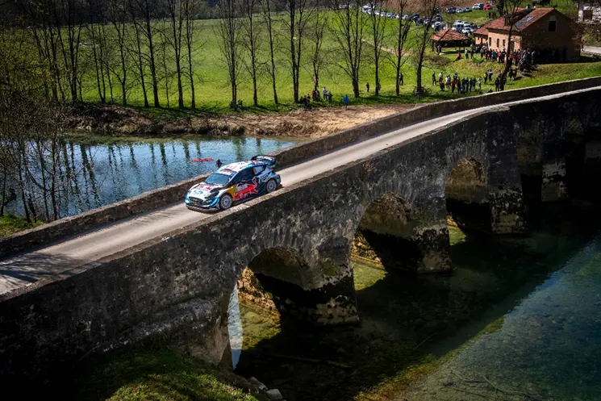
The last 5 debuts from WRC drivers
Gregoire Munster is making his Rally1 debut this week in Chile. The Luxembourger driver will drive a Ford Puma Rally1, previously used by the now retired Jourdan Serderidis, for the first…
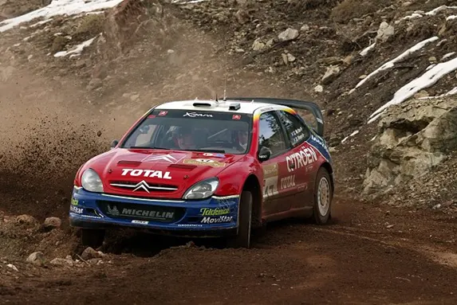
7 of the Worst WRC Driver Moves
The silly season in the WRC is something many look forward to. This year’s silly season has been fairly quiet so far, with not many, if any, rumours about drivers changing teams for 2024.…
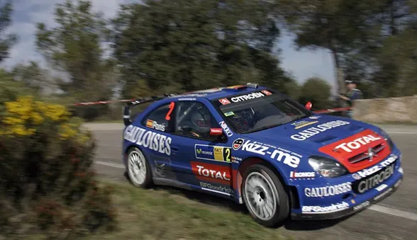
7 WRC drivers that had seasons to forget
An homage to Xevi Pons
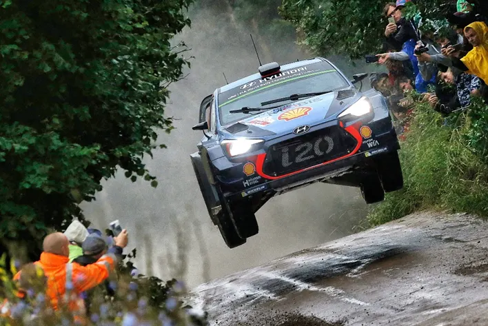
The Catastrophic Rally Poland of 1973
Rally Poland has been a staple of the ERC calendar since it first featured on the calendar in 1960. Since then, Rally Poland has featured in...
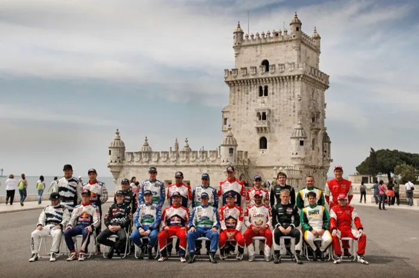
The last privateer win - Portugal 2012
For our second throwback for Rally Portugal, we travel just over 10 years in the past in 2012. 2012 was a transitional year of sorts, as t...
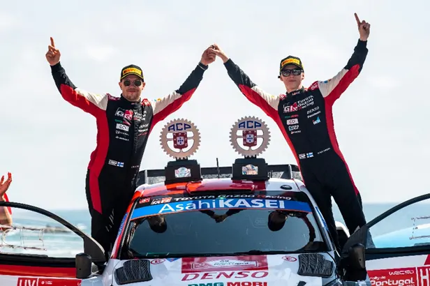
Marcus Gronholm's one off in a Subaru - A throwback to Rally Portugal 2009
The WRC is back this week, with the 2 nd gravel rally of the season in Portugal. For that reason, this week we will be taking a look at s...
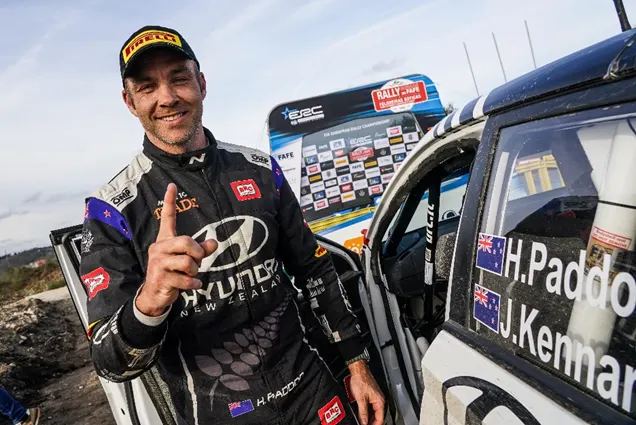
7 of the best rallies not to have hosted a WRC Event
The ERC returns next week with Rally Islas Canarias, in Spain. It’s the 2 nd round of the championship, with the season opener leaving us a...
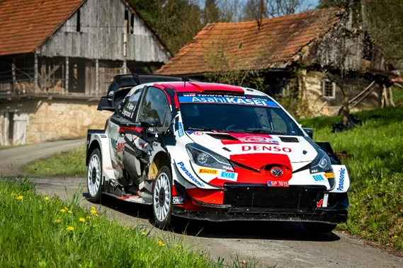
7 times WRC drivers had accidents in a Road Section
The first edition of Rally Croatia saw the rare occurrence of a rally car colliding with a civilian car in a road section when coming up t...
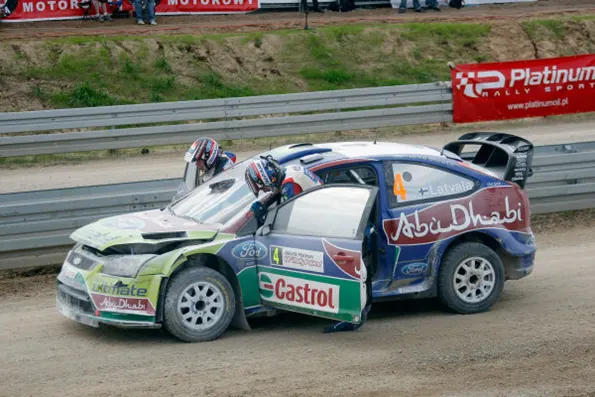
10 +1 Times Drivers Crashed in a Super Special Stage
We all have embarrassing moments. Whether that is entering a room and then immediately forget what we wanted to do, or saying goodbye to som...
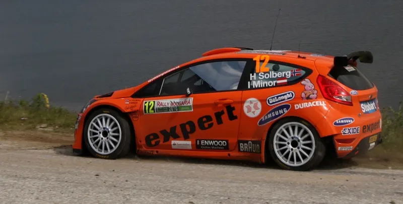
Rally Bulgaria: The Forgotten Tarmac Rally
Rally Croatia may have only hosted 2 WRC rallies, but it has soon become a fan favorite, as both of the 2021 and 2022 editions are considere...
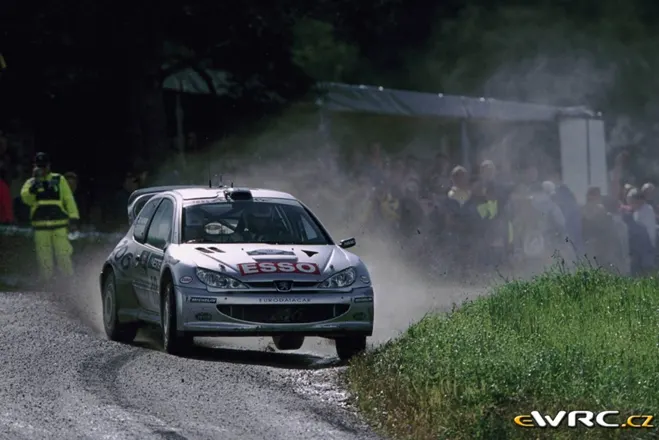
Marcus Gronholm's 7 Rally Finland Wins: A Retrospect
Rally Finland is for many the highlight of the WRC season. It is the rally where we get to witness rally cars go flat out for about 300km,...